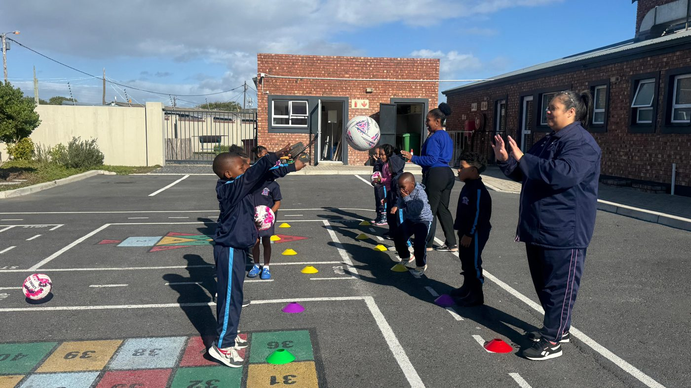
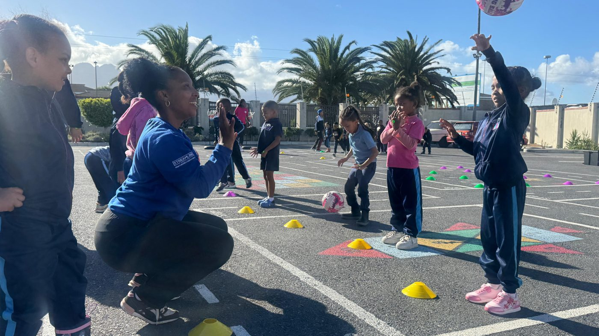
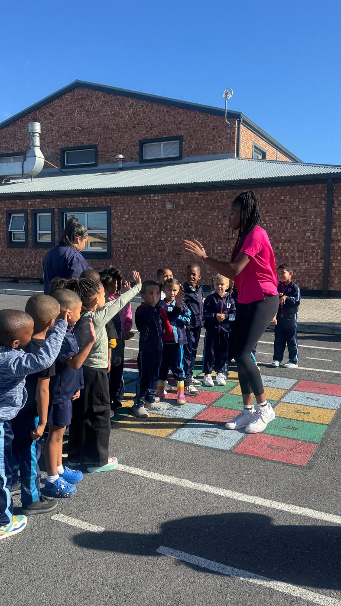
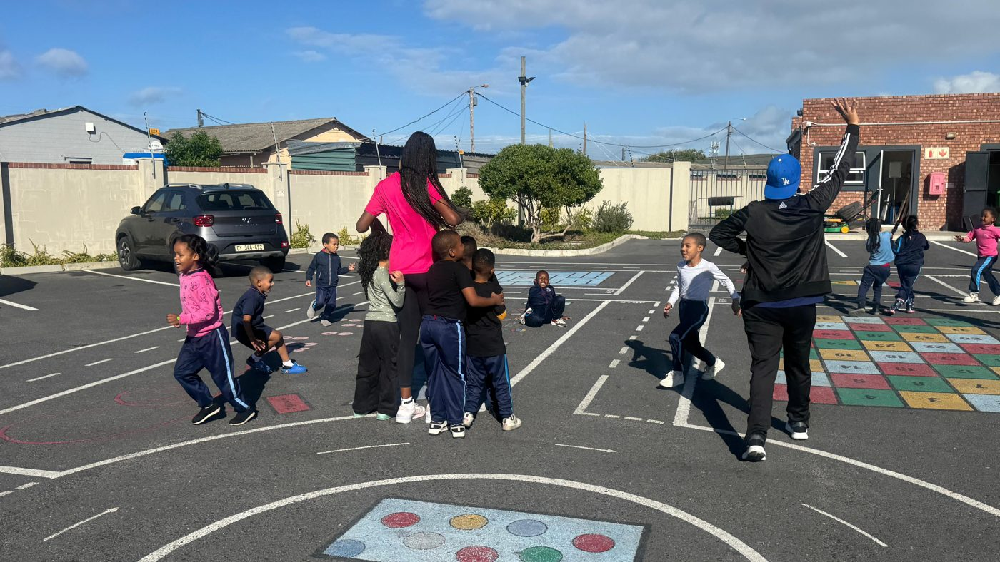

On 22 April 2026, Netball in a Box made its way to Macassar for a visit to Bundles of Joy Childcare Centre. This outreach felt especially close to home because I was joined by two members of the Macassar community: Audrey Jacobs, a local netball coach, and her husband, Moses Jacobs. Having them beside me made the day feel like a true community effort.
At Bundles of Joy, we were welcomed warmly by the principal, Mrs Chrisley, and her dedicated staff. We were then introduced to the centre's physical education teacher, and Audrey and I worked closely with her throughout the visit. Together we set up the box, and I showed her how everything inside it can be used to create a playing space anywhere. She had already begun some wonderful training with the learners, so we wove her ideas into our demonstration session. For me, this is what the programme is all about. I'm not there to replace what teachers are already doing but to support them, so that the learning carries on long after I've gone.
Then the learners took over. Their energy was infectious, and from the first whistle they had everyone in the room captivated. I always begin a session by holding up a netball and asking the children if they know what it is. That day, the most popular answer was “basketball”, and I loved every guess. By the end of the lesson, the children were proudly calling themselves “netball stars”. It was a small win for the sport, and it showed what an early introduction to movement and play can do.
Watching these young learners discover netball for the first time reminded me why we do this. When children are given the chance to play, they grow in confidence, coordination and joy. We left the Netball in a Box with the school, so that the children of Bundles of Joy can keep playing and growing their love for the game.




For more information, contact:
Dr. Freda Kemp, Director
Email: fkemp64@gmail.com
Phone: 082 523 0785